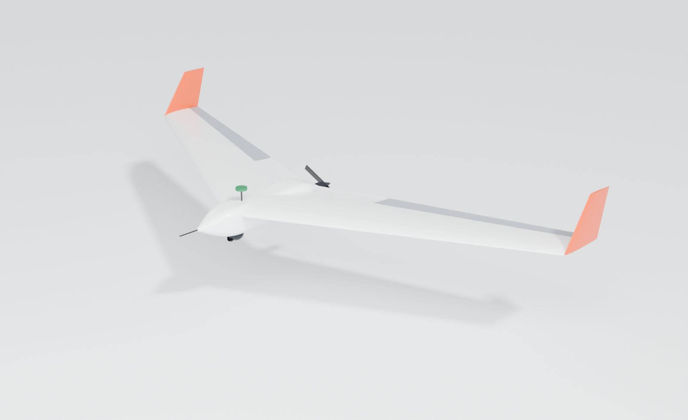
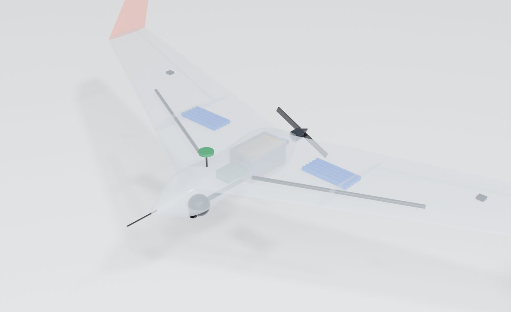
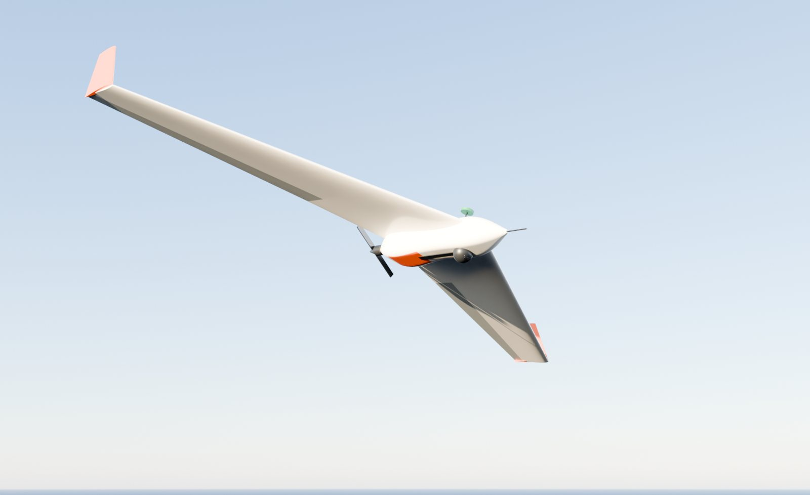
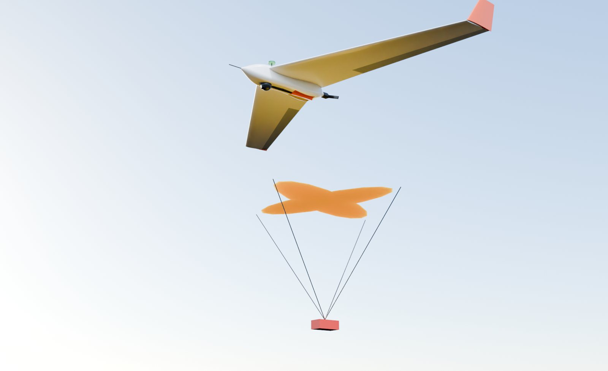
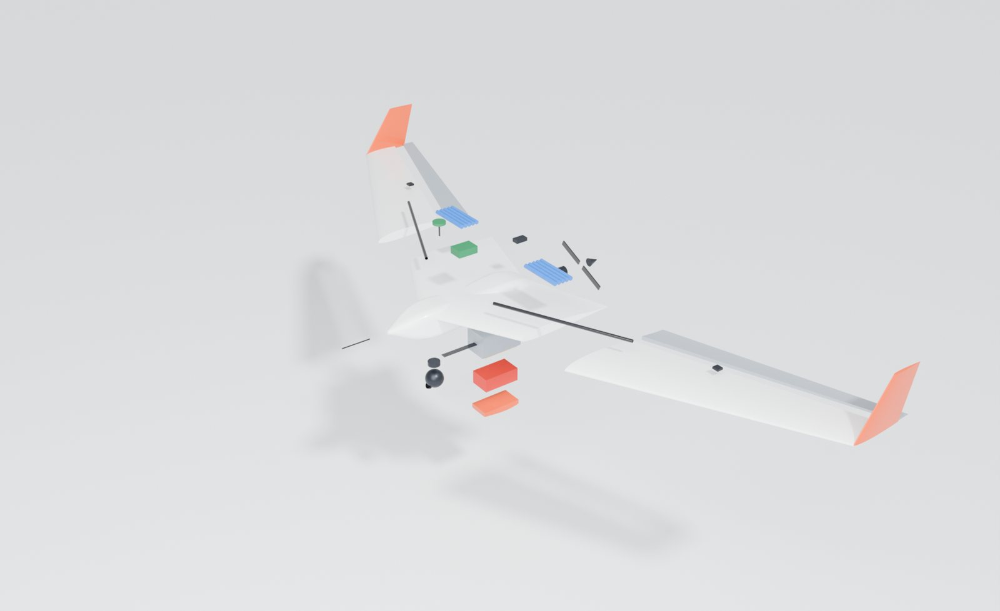
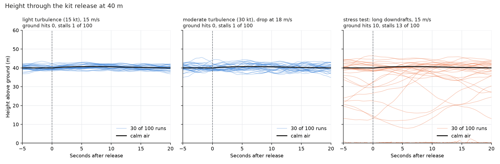
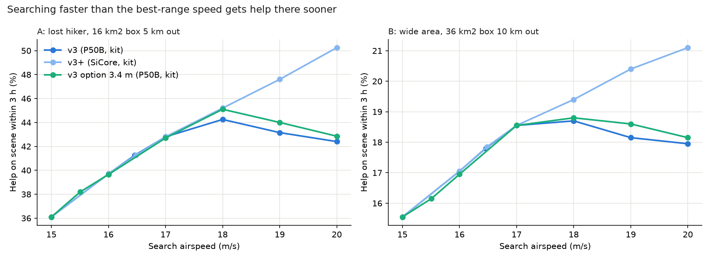
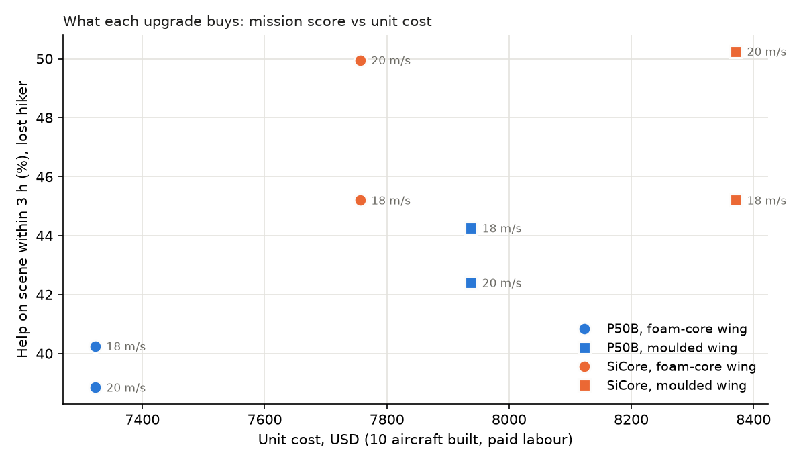

<title>Lodestar Flying Wing</title>
<meta name="claude:viewport-fit-sides" content="cover">
<link rel="preconnect" href="https://fonts.googleapis.com">
<link rel="stylesheet" href="https://fonts.googleapis.com/css2?family=Barlow+Condensed:wght@500;600;700&family=Public+Sans:ital,wght@0,400;0,600;0,700;1,400&family=IBM+Plex+Mono:wght@400;500&display=swap">
<style>
/* Layout: one reading column (~68ch) with wider figure bands; an engraved "data plate" as the opening spec block. */
:root {
  --paper: #f3f5f6;
  --plate: #ffffff;
  --ink: #15212b;
  --muted: #56636e;
  --rule: #d3dadf;
  --orange: #c84a17;      /* search-and-rescue orange: marks, bars, kit */
  --orange-soft: #f6d9cc;
  --steel: #2b6890;       /* the fielded-drone comparison */
  --steel-soft: #d6e4ee;
  --display: "Barlow Condensed", "Arial Narrow", "Roboto Condensed", sans-serif;
  --body: "Public Sans", "Segoe UI", system-ui, sans-serif;
  --mono: "IBM Plex Mono", ui-monospace, "Cascadia Mono", Consolas, monospace;
}
@media (prefers-color-scheme: dark) {
  :root:not([data-theme="light"]) {
    --paper: #0f161b; --plate: #172129; --ink: #e5ecf0; --muted: #9aa7b1; --rule: #2a3640;
    --orange: #f07a45; --orange-soft: #4a2617; --steel: #74abd1; --steel-soft: #1d3444; color-scheme: dark;
  }
}
:root[data-theme="dark"] {
  --paper: #0f161b; --plate: #172129; --ink: #e5ecf0; --muted: #9aa7b1; --rule: #2a3640;
  --orange: #f07a45; --orange-soft: #4a2617; --steel: #74abd1; --steel-soft: #1d3444; color-scheme: dark;
}
* { box-sizing: border-box; }
body {
  background: var(--paper); color: var(--ink); font-family: var(--body); font-size: 17px; line-height: 1.6;
  padding-left: max(16px, env(safe-area-inset-left, 0px)); padding-right: max(16px, env(safe-area-inset-right, 0px));
}
main { max-width: 1080px; margin: 0 auto; padding-block: 40px 64px; display: grid; gap: 56px; }
section { display: grid; gap: 18px; }
.col { max-width: 68ch; }
h1, h2, h3 { font-family: var(--display); font-weight: 700; line-height: 1.05; text-wrap: balance; margin: 0; }
h1 { font-size: clamp(56px, 11vw, 104px); letter-spacing: 0.01em; text-transform: uppercase; }
h2 { font-size: clamp(30px, 5vw, 40px); text-transform: uppercase; letter-spacing: 0.02em; }
h3 { font-size: 22px; letter-spacing: 0.02em; }
p { margin: 0; }
.eyebrow { font-family: var(--mono); font-size: 13px; letter-spacing: 0.12em; text-transform: uppercase; color: var(--muted); }
.lede { font-size: clamp(19px, 2.4vw, 22px); line-height: 1.5; max-width: 52ch; }
a { color: var(--steel); text-underline-offset: 3px; }
a:focus-visible { outline: 2px solid var(--orange); outline-offset: 2px; }
strong { font-weight: 700; }

/* Hero */
.hero { display: grid; gap: 22px; }
.hero figure { margin: 0; border-radius: 6px; overflow: hidden; background: #e9ebed; }
.hero img { display: block; width: 100%; height: auto; }

/* Data plate: the aircraft's identity plate */
.plate {
  font-family: var(--mono); background: var(--plate); border: 1.5px solid var(--ink); border-radius: 4px;
  padding: 18px 20px; display: grid; gap: 14px; max-width: 760px;
}
.plate-head { display: flex; justify-content: space-between; gap: 12px; flex-wrap: wrap; font-size: 12px; letter-spacing: 0.14em; text-transform: uppercase; color: var(--muted); border-bottom: 1px solid var(--rule); padding-bottom: 10px; }
.plate dl { display: grid; grid-template-columns: repeat(auto-fit, minmax(128px, 1fr)); gap: 14px 18px; margin: 0; }
.plate dt { font-size: 11px; letter-spacing: 0.14em; text-transform: uppercase; color: var(--muted); }
.plate dd { margin: 2px 0 0; font-size: 20px; font-weight: 500; font-variant-numeric: tabular-nums; }
.plate dd small { font-size: 12px; color: var(--muted); font-weight: 400; }

/* The answer */
.answer { border-left: 4px solid var(--orange); padding: 4px 0 4px 20px; display: grid; gap: 12px; }
.answer p { font-size: clamp(19px, 2.4vw, 22px); line-height: 1.45; max-width: 56ch; }

/* Bar chart drawn in HTML so it follows the theme */
.bars { display: grid; gap: 10px; max-width: 760px; }
.bar { display: grid; grid-template-columns: minmax(130px, 220px) 1fr; gap: 12px; align-items: center; }
.bar .name { font-size: 15px; line-height: 1.25; }
.bar .name small { display: block; color: var(--muted); font-size: 13px; }
.track { position: relative; height: 26px; background: transparent; border-left: 1px solid var(--rule); }
.fill { height: 100%; border-radius: 0 4px 4px 0; background: var(--steel); display: flex; align-items: center; }
.fill.lodestar { background: var(--orange); }
.val { position: absolute; top: 50%; transform: translateY(-50%); font-family: var(--mono); font-size: 14px; font-variant-numeric: tabular-nums; padding-left: 8px; }
.axisnote { font-size: 14px; color: var(--muted); max-width: 68ch; }

/* Figures */
figure { margin: 0; display: grid; gap: 8px; }
figcaption { font-size: 14px; color: var(--muted); max-width: 72ch; }
.chart { background: #fcfcfb; border-radius: 6px; padding: 10px; border: 1px solid var(--rule); }
.chart img { display: block; width: 100%; height: auto; }
.gallery { display: grid; grid-template-columns: repeat(2, minmax(0, 1fr)); gap: 18px; }
.gallery figure img { display: block; width: 100%; height: auto; border-radius: 6px; background: #e9ebed; }
.gallery .wide { grid-column: 1 / -1; }

/* Tables */
.tablewrap { overflow-x: auto; max-width: 100%; }
table { border-collapse: collapse; font-size: 15px; min-width: 520px; }
th, td { text-align: left; padding: 8px 14px 8px 0; border-bottom: 1px solid var(--rule); vertical-align: top; }
th { font-family: var(--mono); font-size: 12px; letter-spacing: 0.1em; text-transform: uppercase; color: var(--muted); font-weight: 500; }
td.num, th.num { text-align: right; font-variant-numeric: tabular-nums; font-family: var(--mono); font-size: 14px; }
tr.pick td { font-weight: 700; }
tr.pick td:first-child { box-shadow: inset 3px 0 0 var(--orange); padding-left: 10px; }

/* Lists */
ul.clean { margin: 0; padding-left: 1.1em; display: grid; gap: 8px; max-width: 68ch; }
ol.log { list-style: none; margin: 0; padding: 0; display: grid; gap: 0; max-width: 820px; }
ol.log li { display: grid; grid-template-columns: 64px 1fr; gap: 16px; padding: 12px 0; border-top: 1px solid var(--rule); }
ol.log .m { font-family: var(--mono); font-size: 13px; color: var(--orange); padding-top: 3px; letter-spacing: 0.06em; }
ol.log h3 { font-size: 19px; margin-bottom: 2px; }
ol.log p { font-size: 15.5px; color: var(--ink); }

.rules { display: grid; grid-template-columns: repeat(auto-fit, minmax(230px, 1fr)); gap: 14px; }
.rule { background: var(--plate); border: 1px solid var(--rule); border-radius: 6px; padding: 14px 16px; display: grid; gap: 4px; align-content: start; }
.rule b { font-family: var(--display); font-size: 21px; font-weight: 600; letter-spacing: 0.02em; }
.rule span { font-size: 15px; color: var(--muted); }

footer { border-top: 1px solid var(--rule); padding-top: 16px; font-size: 14px; color: var(--muted); display: grid; gap: 6px; }

@media (max-width: 640px) {
  body { font-size: 16px; }
  .gallery { grid-template-columns: minmax(0, 1fr); }
  .bar { grid-template-columns: 1fr; gap: 4px; }
  ol.log li { grid-template-columns: 48px 1fr; gap: 10px; }
}
@media (prefers-reduced-motion: no-preference) {
  .fill { transition: width 0.6s ease-out; }
}
</style>

<main>
  <header class="hero">
    <div class="eyebrow">Civil search-and-rescue aircraft · design study · November 2026</div>
    <h1>Lodestar</h1>
    <p class="lede">A 3-metre flying wing that searches for a lost hiker with a thermal camera for over four hours. When it finds them, it drops a survival kit with a radio, water and a foil blanket by parachute, within about 25 m.</p>
    <figure>
      
    </figure>
    <div class="plate" aria-label="Specification plate">
      <div class="plate-head"><span>Lodestar · recommended build</span><span>SiCore cells · foam-core wing</span></div>
      <dl>
        <div><dt>Span</dt><dd>3.0 m <small>3 pieces, fits a car</small></dd></div>
        <div><dt>Take-off mass</dt><dd>7.4 kg</dd></div>
        <div><dt>Flight time</dt><dd>4.25 h <small>2,000 m, kit aboard</small></dd></div>
        <div><dt>Search speed</dt><dd>20 m/s</dd></div>
        <div><dt>Stall</dt><dd>11.8 m/s</dd></div>
        <div><dt>Kit</dt><dd>1.5 kg <small>by parachute</small></dd></div>
        <div><dt>Camera</dt><dd>640 × 512 <small>thermal + 4K</small></dd></div>
        <div><dt>Unit cost</dt><dd>≈ $7,760</dd></div>
      </dl>
    </div>
  </header>

  <section>
    <div class="eyebrow">The answer</div>
    <div class="answer">
      <p>In 2,000 simulated lost-hiker missions, Lodestar gets help to the person within 3 hours in <strong>50%</strong> of them. The best search drone on the market does it in <strong>17%</strong>.</p>
      <p>Each aircraft costs about $7,800 to build. Each 3-hour search costs about $80 in aircraft costs; a sheriff's helicopter costs $3,600 or more for the same 3 hours.</p>
    </div>
    <p class="col">The gap comes from what happens after the find. Today's drones report the location, and a ground team still has to walk in, often for hours. Lodestar drops a radio, water and a blanket on the spot. In the simulation, help counts as arriving when the kit lands.</p>
  </section>

  <section>
    <h2>Help within 3 hours</h2>
    <div class="bars" role="img" aria-label="Share of lost-hiker missions where help reaches the person within 3 hours">
      <div class="bar"><div class="name">Lodestar <small>SiCore cells, 20 m/s</small></div><div class="track"><div class="fill lodestar" style="width:83.3%"></div><span class="val" style="left:83.3%">50%</span></div></div>
      <div class="bar"><div class="name">Lodestar <small>P50B cells, 18 m/s (fallback)</small></div><div class="track"><div class="fill lodestar" style="width:67%"></div><span class="val" style="left:67%">40%</span></div></div>
      <div class="bar"><div class="name">DeltaQuad Evo GOV <small>4.25 h, VTOL</small></div><div class="track"><div class="fill" style="width:28.3%"></div><span class="val" style="left:28.3%">17%</span></div></div>
      <div class="bar"><div class="name">DeltaQuad Evo-LE <small>8 h (press-reported)</small></div><div class="track"><div class="fill" style="width:28.3%"></div><span class="val" style="left:28.3%">17%</span></div></div>
      <div class="bar"><div class="name">C-Astral Bramor ppX <small>3.5 h</small></div><div class="track"><div class="fill" style="width:26.7%"></div><span class="val" style="left:26.7%">16%</span></div></div>
      <div class="bar"><div class="name">Quantum Trinity Pro <small>1.5 h</small></div><div class="track"><div class="fill" style="width:25%"></div><span class="val" style="left:25%">15%</span></div></div>
      <div class="bar"><div class="name">AgEagle eBee X <small>1.5 h</small></div><div class="track"><div class="fill" style="width:20%"></div><span class="val" style="left:20%">12%</span></div></div>
    </div>
    <p class="axisnote">The scenario: a lost hiker somewhere in a 16 km² area, 5 km from the launch point. Every aircraft gets the same thermal camera, the same random winds (0-10 m/s) and the same hidden hiker positions. A ground team walks in from the launch point at 3 km/h. Bars run from 0 to 60%. Even the 8-hour Evo-LE scores 17%: it finds more people, but the team rarely walks in within 3 hours.</p>
  </section>

  <section>
    <h2>The aircraft</h2>
    <p class="col">A tailless swept wing keeps drag low and packs into a car in three pieces. The 30 battery cells sit in the wing roots. The kit bay sits exactly on the balance point, so dropping 23% of the aircraft's weight barely changes how it flies. A thermal camera ball hangs under the nose and a folding prop pushes from the back.</p>
    <div class="gallery">
      <figure class="wide"><figcaption>Cutaway: battery cells in the wing roots (blue), spar joiners, kit bay on the balance point, flight controller, camera.</figcaption></figure>
      <figure><figcaption>In flight, seen from below: camera ball and the orange kit-bay door.</figcaption></figure>
      <figure><figcaption>The drop: the kit falls under a 1.5 m cross parachute and lands at about 5 m/s.</figcaption></figure>
      <figure class="wide"><figcaption>Exploded view: the 0.9 m centre section and two 1.05 m outer panels, with the internals lifted out. The renders show the earlier 13-inch prop; the final design uses a 15-inch folding prop.</figcaption></figure>
    </div>
  </section>

  <section>
    <h2>The drop</h2>
    <div class="col" style="display:grid;gap:14px">
      <p>The aircraft circles once to measure the wind, then makes a low pass about 40 m above the person and releases the kit upwind. How close the kit lands depends on how well the aircraft knows the wind, not on the parachute. From 40 m, 95% of kits land within 25 m.</p>
      <p>The release itself is a non-event. In a full 6-degree-of-freedom flight simulation, the autopilot holds height to within 0.7 m as the kit falls away. With the autopilot switched off, the aircraft just climbs about 9 m and settles on its own. The real limit is turbulence near the ground. That gives two operating rules: fly the drop run faster in rough air, and don't descend into strong sinking air.</p>
    </div>
    <figure>
      <div class="chart"></div>
      <figcaption>Height through the release, 100 simulated drops per case (30 shown). In light turbulence: no ground strikes. In moderate turbulence, flown at 18 m/s: no ground strikes and one brief stall. Long mountain downdrafts: 10 of 100 hit the ground, so the aircraft must not descend into them.</figcaption>
    </figure>
  </section>

  <section>
    <h2>Getting more from the same airframe</h2>
    <p class="col">After the first full design, three changes added endurance without touching the airframe:</p>
    <ul class="clean">
      <li><strong>A propeller and motor matched to the job.</strong> I used measured wind-tunnel data for 41 propellers and five real motors. That picked a 15-inch folding prop and a T-Motor AT3520, which turn 64% of battery power into thrust.</li>
      <li><strong>Searching faster.</strong> Inside a 3-hour window, ground covered per hour matters more than ground covered per unit of battery. Help within 3 h peaks at 18 m/s with the cheaper cells, and keeps climbing to 20 m/s with SiCore cells.</li>
      <li><strong>Better cells.</strong> Amprius SiCore silicon-anode cells drop into the same 21700 slots and store 26% more energy.</li>
    </ul>
    <figure>
      <div class="chart"></div>
      <figcaption>Help within 3 h against search speed. The cheaper cells (dark blue) peak at 18 m/s; with SiCore cells (light blue) it keeps rising to 50% at 20 m/s. A 3.4 m span (green) adds endurance but barely moves the score, so the span stays at 3.0 m.</figcaption>
    </figure>
    <p class="col">Two things I checked didn't help. MH45 is already about the best airfoil for the job: of 52 candidates, the ones that beat it gain about 1% or are too thin for the cells. And a bigger wing can't fly slow enough to pay for itself, because the 12 m/s stall limit already sets the area.</p>
  </section>

  <section>
    <h2>Cost</h2>
    <p class="col">The thermal camera is the biggest single item, at $2,940. The airframe comes next, and most of that is labour; a volunteer build saves about $2,000 per aircraft. The battery cells cost about $250, and wear costs about 20 cents per flight hour.</p>
    <div class="tablewrap">
      <table>
        <thead><tr><th>Option</th><th class="num">Cost per hour</th><th class="num">3-hour search</th><th class="num">Help within 3 h</th></tr></thead>
        <tbody>
          <tr class="pick"><td>Lodestar, volunteer crew</td><td class="num">$26</td><td class="num">$79</td><td class="num">40-50%</td></tr>
          <tr><td>Quantum Trinity Pro ($21,260)</td><td class="num">$65</td><td class="num">$195</td><td class="num">15%</td></tr>
          <tr><td>senseFly eBee VISION ($59,717)</td><td class="num">$183</td><td class="num">$547</td><td class="num">≈ 12%</td></tr>
          <tr><td>Civil Air Patrol light aircraft</td><td class="num">$93-170</td><td class="num">$279-510</td><td class="num">not modelled</td></tr>
          <tr><td>Sheriff's helicopter</td><td class="num">$1,200-4,050</td><td class="num">$3,600-12,150</td><td class="num">not modelled</td></tr>
        </tbody>
      </table>
    </div>
    <p class="axisnote">Drone hourly costs use the same ownership assumptions for every aircraft: purchase price spread over a 400-hour life, plus repairs. A helicopter does things Lodestar can't, such as lifting the person out. The point is the search hours it burns before anyone is found.</p>
    <figure>
      <div class="chart"></div>
      <figcaption>What each upgrade buys. SiCore cells add 10 points for about $430, the best value at about $45 per point. Moulded, smooth wing skins add nothing once the SiCore cells give spare energy. They only pay off with the cheaper cells and a fleet of about 25 or more aircraft.</figcaption>
    </figure>
    <div class="tablewrap">
      <table>
        <thead><tr><th>Build</th><th class="num">Unit cost</th><th class="num">Help within 3 h</th></tr></thead>
        <tbody>
          <tr class="pick"><td>SiCore cells, foam-core wing, 20 m/s (recommended)</td><td class="num">$7,760</td><td class="num">50%</td></tr>
          <tr><td>P50B cells, foam-core wing, 18 m/s (if SiCore can't be bought)</td><td class="num">$7,320</td><td class="num">40%</td></tr>
          <tr><td>P50B cells, moulded wing, 18 m/s (fleet of 25+)</td><td class="num">$7,140 at 30 built</td><td class="num">44%</td></tr>
        </tbody>
      </table>
    </div>
  </section>

  <section>
    <h2>Operating rules</h2>
    <div class="rules">
      <div class="rule"><b>Search at 20 m/s</b><span>18 m/s with the cheaper P50B cells. Faster finds people sooner inside the 3-hour window.</span></div>
      <div class="rule"><b>Circle, then drop from 40 m</b><span>Measure the wind first. Release upwind about 40 m above the person: 95% of kits land within 25 m.</span></div>
      <div class="rule"><b>Drop at 18 m/s in rough air</b><span>At 15 m/s, moderate turbulence stalls the wing briefly in about half of runs; at 18 m/s it's 1 in 100.</span></div>
      <div class="rule"><b>Don't descend into sink</b><span>If the aircraft measures sustained sinking air above about 2 m/s, release from higher or wait.</span></div>
    </div>
  </section>

  <section>
    <h2>How it was designed</h2>
    <ol class="log">
      <li><span class="m">M0</span><div><h3>Prior art and requirements</h3><p>Today's fixed-wing search drones fly about 90 minutes and cost around $45,000-60,000. Targets set: 3+ hours, a 1.5 kg kit, 12 m/s stall, three pieces that fit a car.</p></div></li>
      <li><span class="m">M1</span><div><h3>Sizing and the kit drop</h3><p>A sweep of 13,834 designs showed a 2.5 m wing can't reach 3 hours; 3.0 m can. Parachute sized so the kit lands at 5 m/s.</p></div></li>
      <li><span class="m">M2</span><div><h3>Stability without a tail</h3><p>AVL vortex-lattice analysis: 6% static margin, 3° washout, 0.25 m winglets. Stable and trimmed from 12.5 to 22 m/s with the kit aboard and after the drop.</p></div></li>
      <li><span class="m">M3</span><div><h3>3D model and aero check</h3><p>OpenVSP model with the pod. The pod moves the balance point 15 mm forward. Endurance depends on how smooth the wing stays.</p></div></li>
      <li><span class="m">M4</span><div><h3>Mission simulation</h3><p>2,000 missions against five real drones with the same camera and winds. The kit drop is the edge, not raw endurance.</p></div></li>
      <li><span class="m">M5</span><div><h3>Detailed CAD and flight simulation</h3><p>A 31-part STEP assembly with every part inside the skin and the balance point within 1.7 mm of design. JSBSim flight simulation of the release in calm air and turbulence.</p></div></li>
      <li><span class="m">v3</span><div><h3>Improvements</h3><p>Matched prop and motor, faster search, airfoil and span checked and kept. Design-case flight time up from 3.0 to 3.6 hours on the cheaper cells.</p></div></li>
      <li><span class="m">M6</span><div><h3>Cost model</h3><p>Parts list from current retail prices, cost per flight hour, and the cost-vs-score trades that picked the recommended build.</p></div></li>
    </ol>
  </section>

  <section>
    <h2>Not proven yet</h2>
    <ul class="clean">
      <li><strong>Nothing has flown.</strong> Every number comes from analysis and simulation with free tools and public data. A flight-test prototype is the next step.</li>
      <li><strong>SiCore cells are only sold as evaluation samples</strong> and have no public price; $23 a cell is assumed. The P50B fallback uses cells in volume production.</li>
      <li><strong>Image blur at 20 m/s isn't modelled.</strong> A thermal camera smears the image by roughly 1.7-2 pixels at that speed, which could cut detection. Flight tests should set the speed limit.</li>
      <li><strong>The flight model can't simulate a real stall;</strong> it flags when the wing would stall. The bay-door drag is an estimate, though doubling it barely matters.</li>
      <li><strong>Mould and labour costs are estimates.</strong> Certification, insurance, training and the FAA waiver for flying beyond line of sight aren't costed.</li>
    </ul>
  </section>

  <footer>
    <span>Design study and report by Claude Opus 5.5 (claude-opus-5-5) for Dominic, 12 November 2026 (US Central).</span>
    <span>Tools: AeroSandbox and NeuralFoil, AVL, OpenVSP, JSBSim, build123d, Blender, and the UIUC Propeller Data Site. Prices are US retail listings checked 12 November 2026.</span>
  </footer>
</main>
